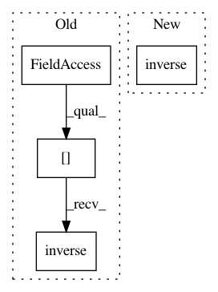

91b0d220c8e816766fd4565e1d2f5115d3afbefe,test/functions/test_inv_quad_log_det.py,TestInvQuadLogDetBatch,test_inv_quad_log_det_many_vectors,#TestInvQuadLogDetBatch#,130
Before Change
def test_inv_quad_log_det_many_vectors(self):
// Forward pass
actual_inv_quad = (
torch.cat([self.mats_var_clone[0].inverse().unsqueeze(0), self.mats_var_clone[1].inverse().unsqueeze(0)])
.matmul(self.vecs_var_clone)
.mul(self.vecs_var_clone)
.sum(2)
After Change
def test_inv_quad_log_det_many_vectors(self):
// Forward pass
actual_inv_quad = (
torch.cat([mat.inverse().unsqueeze(0) for mat in self.mats_clone])
.matmul(self.vecs_clone)
.mul(self.vecs_clone)
.sum(2)
In pattern: SUPERPATTERN
Frequency: 3
Non-data size: 4
Instances
Project Name: cornellius-gp/gpytorch
Commit Name: 91b0d220c8e816766fd4565e1d2f5115d3afbefe
Time: 2018-10-12
Author: gpleiss@gmail.com
File Name: test/functions/test_inv_quad_log_det.py
Class Name: TestInvQuadLogDetBatch
Method Name: test_inv_quad_log_det_many_vectors
Project Name: cornellius-gp/gpytorch
Commit Name: 91b0d220c8e816766fd4565e1d2f5115d3afbefe
Time: 2018-10-12
Author: gpleiss@gmail.com
File Name: test/functions/test_inv_quad_log_det.py
Class Name: TestInvQuadLogDetBatch
Method Name: test_inv_quad_only_many_vectors
Project Name: Qiskit/qiskit-aqua
Commit Name: 7ed25c1db031d602e669c04c60ff431016214742
Time: 2019-04-03
Author: shaohan.hu@ibm.com
File Name: qiskit/aqua/components/eigs/eigs.py
Class Name: Eigenvalues
Method Name: construct_inverse